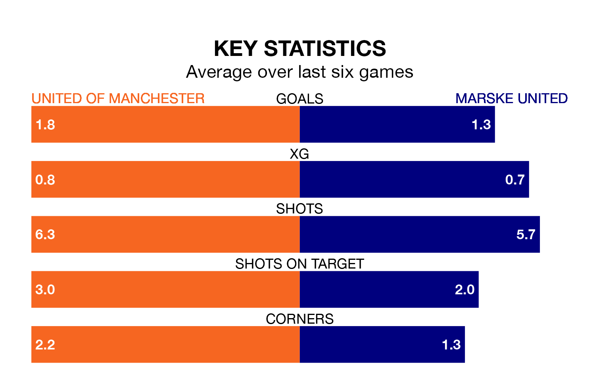

United of Manchester host Marske United on Saturday at Broadhurst Park in Northern Premier League.
In their last league match, on January 13, United of Manchester beat Bradford Park Avenue 4-2 away.
Marske lost, 2-0 at home against Morpeth Town on December 30.
Marske are 19th in the table after 22 games, of which they have won seven and lost 15, earning 21 points.
United of Manchester are five places ahead of United in 14th, with 10 wins and four draws putting them on 34 points.
With 30 goals in 22 games so far this season, the visitors are scoring at below the league average rate with 1.4 goals per game. And they are conceding more than average, letting in 53 goals at a rate of 2.4 per game.
F.C. United, meanwhile, are average scorers, with 1.6 goals per game. They have conceded 2.0 goals per game.
In the last five years, United of Manchester and Marske have played each other on five occasions. United of Manchester won three of them and Marske two.
On average, F.C. United scored 2.6 goals and Marske 1.8 in those matches.
Their last meeting was on October 3, when United of Manchester won 5-2 away.
The home team are in reasonable form in Northern Premier League, with four wins and two losses from their last six games.
With three wins and three losses over that period, Marske's form is worse – they have taken nine points from 18, compared to United of Manchester's 12.
Updated: 10:02 (UTC), 19/01/24